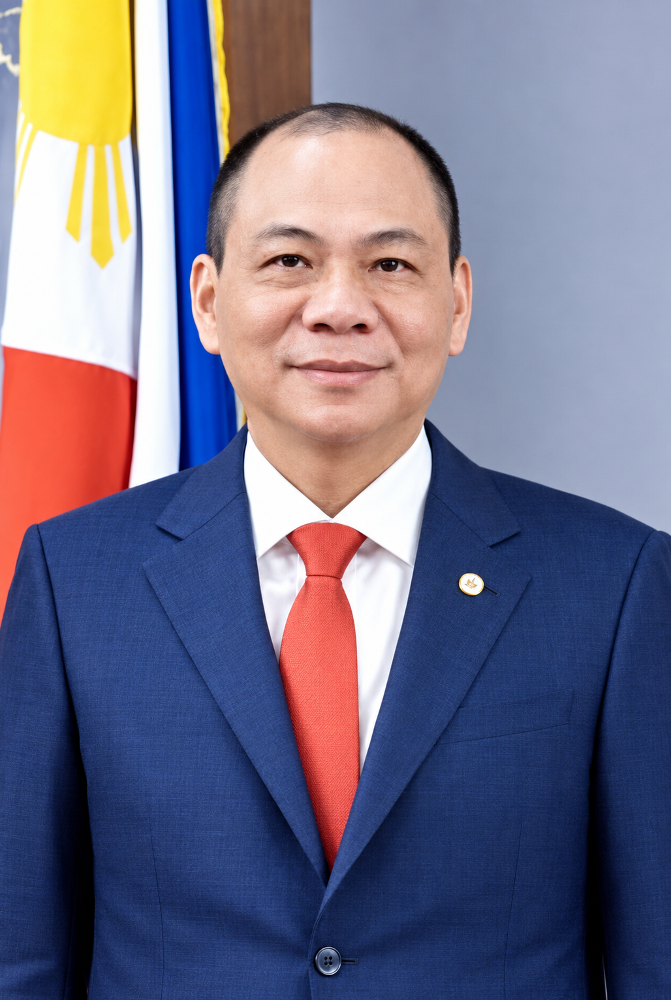

Cuộc đời và bối cảnh
Trưởng thành giữa một giai đoạn chuyển mình
Từ Hà Nội thời bao cấp, sang Liên Xô học tập rồi khởi nghiệp tại Ukraine, môi trường sống liên tục thay đổi đã góp phần hình thành tư duy thích nghi và tinh thần hành động nhanh.
Tuổi thơ và học tập
Phạm Nhật Vượng sinh ngày 5 tháng 8 năm 1968 tại Hà Nội. Các nguồn tiểu sử công khai cho biết gia đình ông có gốc Hà Tĩnh. Ông lớn lên trong bối cảnh kinh tế Việt Nam còn nhiều khó khăn, khi cơ hội tiếp cận hàng hóa và điều kiện kinh doanh còn hạn chế.
Ông học tại Trường Đại học Mỏ Địa chất Hà Nội, sau đó được cử sang Liên Xô học ngành kinh tế địa chất tại Viện Thăm dò Địa chất Moskva. Đây là giai đoạn ông tiếp xúc với một môi trường quốc tế đang biến động mạnh vào cuối thập niên 1980 và đầu thập niên 1990.

Bối cảnh tạo nên người khởi nghiệp
- Việt Nam thời Đổi mới: nền kinh tế chuyển dần sang cơ chế thị trường, mở ra nhu cầu lớn về sản phẩm và dịch vụ mới.
- Đông Âu sau khi Liên Xô tan rã: thị trường thiếu ổn định nhưng cũng tạo khoảng trống cho doanh nhân nhạy bén.
- Nhu cầu thực tế: thực phẩm tiện lợi, có giá phù hợp là một nhu cầu rõ ràng tại Ukraine đầu thập niên 1990.
Khó khăn ban đầu không chỉ là vốn mà còn là việc hiểu thị trường, xây dựng phân phối và cạnh tranh trong một xã hội đang thay đổi. Việc bắt đầu bằng mì ăn liền cho thấy ông chọn giải quyết một nhu cầu đời sống rất cụ thể trước khi mở rộng tham vọng.